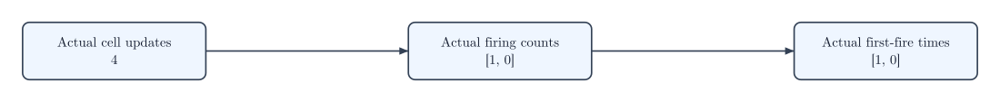
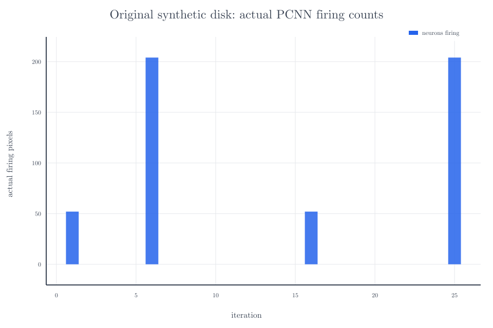
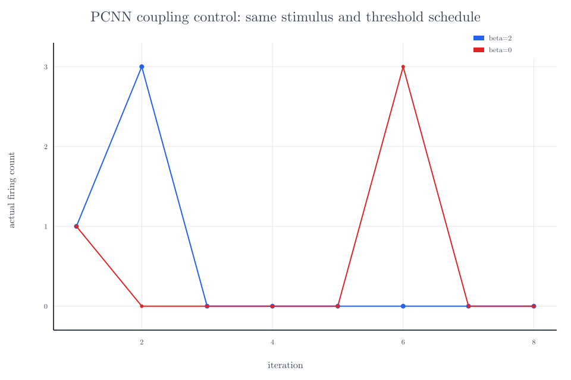
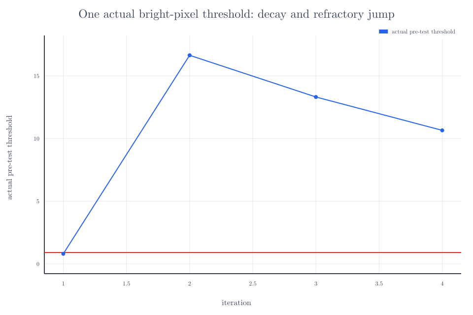

PCNN: actual synchronous pulse dynamics
Abstract
This native simplified model uses each pixel stimulus times one plus beta times its previous eight-neighbor pulse sum. It decays the threshold, tests strict activity>threshold, then adds the refractory gain after firing. All pixels read only previous pulses; row order does not propagate same-iteration firing. Initial threshold need not exceed the image maximum. Brightness ordering and synchronization are fixture-dependent observations, not a segmentation-quality guarantee. The synthetic original disk isolates intensity and local coupling, so no empirical dataset is introduced.
Mechanism and scope
This native simplified model uses each pixel stimulus times one plus beta times its previous eight-neighbor pulse sum. It decays the threshold, tests strict activity>threshold, then adds the refractory gain after firing. All pixels read only previous pulses; row order does not propagate same-iteration firing. Initial threshold need not exceed the image maximum. Brightness ordering and synchronization are fixture-dependent observations, not a segmentation-quality guarantee. The synthetic original disk isolates intensity and local coupling, so no empirical dataset is introduced.
After that strict comparison, the threshold becomes alpha times the old threshold plus gain times the actual pulse. The stronger-coupling control uses beta2 explicitly; the original disk retains beta0.2.
A tiny actual producing history
The table and native diagram use the same producing run. Captured records own their values; the report does not reconstruct the algorithm.
#include <dm/dm.hpp>
int main() {
std::filesystem::create_directories("build");
dm::algorithms::PCNNParameters p;
p.iterations = 2;
auto t = dm::algorithms::pcnn_trace({{.9, .3}}, p);
std::print("| iteration | column | previous neighbor sum | activity | decayed threshold | pulse | after " "|\n| ---: | ---: | ---: | ---: | ---: | ---: | ---: |\n");
for (auto &r : t.cells)
std::print("| {} | {} | {} | {} | {} | {} | {} |\n", r.iteration,
r.column, r.linking, r.activity, r.decayed, r.pulse, r.after);
dm::graphics::Diagram d;
d.node("n0", {0, 0}, std::format("Actual cell updates\n{}", t.cells.size()));
d.node("n1", {8, 0},
std::format("Actual firing counts\n{}", t.result.time_signature));
d.node("n2", {16, 0},
std::format("Actual first-fire times\n{}", t.result.first_fire[0]));
d.edge("n0", "n1").edge("n1", "n2");
d.save_svg("build/pcnn_tiny.svg");
}| iteration | column | previous neighbor sum | activity | decayed threshold | pulse | after |
|---|---|---|---|---|---|---|
| 1 | 0 | 0 | 0.9 | 0.8 | 1 | 20.8 |
| 1 | 1 | 0 | 0.3 | 0.8 | 0 | 0.8 |
| 2 | 0 | 0 | 0.9 | 16.64 | 0 | 16.64 |
| 2 | 1 | 1 | 0.36 | 0.6400000000000001 | 0 | 0.6400000000000001 |

The original fixture, retained
This complete program retains the original inputs, seed and substantive experiment. Any added display prefix is explicitly separate from the original random call schedule.
#include <dm/dm.hpp>
using namespace datamunge::algorithms;
using namespace datamunge::graphics;
int main() {
std::ostringstream original_output;
auto *original_cout = std::cout.rdbuf(original_output.rdbuf());
std::filesystem::create_directories("build");
const std::size_t R = 16, C = 16;
std::vector<std::vector<double>> img(R, std::vector<double>(C, 0.3));
const double cx = 7.5, cy = 7.5, rad = 4.0;
for (std::size_t i = 0; i < R; ++i)
for (std::size_t j = 0; j < C; ++j)
if (std::hypot(i - cy, j - cx) <= rad)
img[i][j] = 0.9; // bright disk
PCNNParameters params;
params.iterations = 25;
params.beta = 0.2;
params.threshold_decay = 0.8;
params.threshold_gain = 20.0;
PCNNResult r = pcnn_run(img, params);
double disk = 0, bg = 0;
int nd = 0, nb = 0;
for (std::size_t i = 0; i < R; ++i)
for (std::size_t j = 0; j < C; ++j) {
if (r.first_fire[i][j] == 0)
continue;
if (std::hypot(i - cy, j - cx) <= rad) {
disk += r.first_fire[i][j];
++nd;
} else {
bg += r.first_fire[i][j];
++nb;
}
}
std::cout <<
"=== PCNN on a 16x16 image (bright disk on dim background) ===\n";
std::cout << "disk pixels: mean first-fire iteration = " << disk / nd <<
" (" << nd << " pixels)\n";
std::cout << "background: mean first-fire iteration = " << bg / nb <<
" (" << nb << " pixels)\n";
std::cout << "=> the brighter disk segments out earlier by ~" <<
(bg / nb - disk / nd) << " iterations\n\n";
std::cout << "time signature (neurons firing each iteration):\n ";
for (int c : r.time_signature)
std::cout << c << ' ';
std::cout << '\n';
std::vector<double> it_x, sig;
for (std::size_t i = 0; i < r.time_signature.size(); ++i) {
it_x.push_back(i + 1);
sig.push_back(r.time_signature[i]);
}
RPlot p = RPlot::create();
p.bars(it_x, sig, "neurons firing", {37, 99, 235}, 0.8);
p.title("Original synthetic disk: actual PCNN firing counts").x_label(
"iteration").y_label("actual firing pixels");
p.save_svg("build/pcnn_original.svg");
std::cout << "\nwrote build/pcnn_original.svg\n";
std::cout.rdbuf(original_cout);
std::print("| Original computed output |\n| --- |\n");
std::istringstream lines(original_output.str());
std::string line;
while (std::getline(lines, line)) {
while (!line.empty() && line.back() == ' ') line.pop_back();
if (!line.empty()) std::print("| `{}` |\n", line);
}
return 0;
}| Original computed output |
|---|
=== PCNN on a 16x16 image (bright disk on dim background) === |
disk pixels: mean first-fire iteration = 1 (52 pixels) |
background: mean first-fire iteration = 6 (204 pixels) |
=> the brighter disk segments out earlier by ~5 iterations |
time signature (neurons firing each iteration): |
52 0 0 0 0 204 0 0 0 0 0 0 0 0 0 52 0 0 0 0 0 0 0 0 204 |
wrote build/pcnn_original.svg |

Controls and boundary cases
#include <dm/dm.hpp>
int main() {
std::filesystem::create_directories("build");
std::vector<double> x, a, b;
dm::algorithms::PCNNParameters q;
q.iterations = 8;
q.beta =
2; // Explicit stronger-coupling control; original disk keeps beta=.2.
auto no = q;
no.beta = 0;
auto linked =
dm::algorithms::pcnn_run({{.9, .3}, {.3, .3}}, q), unlinked =
dm::algorithms::pcnn_run({{.9, .3}, {.3, .3}}, no);
std::print("| iteration | linked actual firings | unlinked actual firings |\n| ---: | ---: | ---: |\n");
for (std::size_t i = 0; i < q.iterations; ++i) {
x.push_back(i + 1);
a.push_back(linked.time_signature[i]);
b.push_back(unlinked.time_signature[i]);
std::print("| {} | {} | {} |\n", i + 1, a.back(), b.back());
}
auto p = dm::graphics::RPlot::create();
p.lines(x, a, "beta=2", {37, 99, 235}).points(x, a, {37, 99, 235}, 4).lines(
x, b, "beta=0", {220, 38, 38}).points(x, b, {220, 38, 38}, 3).title(
"PCNN coupling control: same stimulus and threshold schedule").x_label(
"iteration").y_label("actual firing count");
p.save_svg("build/pcnn_controls.svg");
}| iteration | linked actual firings | unlinked actual firings |
|---|---|---|
| 1 | 1 | 1 |
| 2 | 3 | 0 |
| 3 | 0 | 0 |
| 4 | 0 | 0 |
| 5 | 0 | 0 |
| 6 | 0 | 3 |
| 7 | 0 | 0 |
| 8 | 0 | 0 |

Producing work and finite observations
#include <dm/dm.hpp>
int main() {
std::filesystem::create_directories("build");
dm::algorithms::PCNNParameters q;
q.iterations = 4;
q.beta = 0;
auto t = dm::algorithms::pcnn_trace({{0, .2, .5, .9}}, q);
std::vector<double> x, y;
std::print("| iteration | column | actual decayed threshold | actual activity | actual pulse |\n| ---: " "| ---: | ---: | ---: | ---: |\n");
for (auto &r : t.cells) {
std::print("| {} | {} | {} | {} | {} |\n", r.iteration, r.column,
r.decayed, r.activity, r.pulse);
if (r.column == 3) {
x.push_back(r.iteration);
y.push_back(r.decayed);
}
}
auto p = dm::graphics::RPlot::create();
p.lines(x, y, "actual pre-test threshold", {37, 99, 235}).points(
x, y, {37, 99, 235}, 4).abline_h(.9, {220, 38, 38}, 2).title(
"One actual bright-pixel threshold: decay and refractory jump").x_label(
"iteration").y_label("actual pre-test threshold");
p.save_svg("build/pcnn_work.svg");
}| iteration | column | actual decayed threshold | actual activity | actual pulse |
|---|---|---|---|---|
| 1 | 0 | 0.8 | 0 | 0 |
| 1 | 1 | 0.8 | 0.2 | 0 |
| 1 | 2 | 0.8 | 0.5 | 0 |
| 1 | 3 | 0.8 | 0.9 | 1 |
| 2 | 0 | 0.6400000000000001 | 0 | 0 |
| 2 | 1 | 0.6400000000000001 | 0.2 | 0 |
| 2 | 2 | 0.6400000000000001 | 0.5 | 0 |
| 2 | 3 | 16.64 | 0.9 | 0 |
| 3 | 0 | 0.5120000000000001 | 0 | 0 |
| 3 | 1 | 0.5120000000000001 | 0.2 | 0 |
| 3 | 2 | 0.5120000000000001 | 0.5 | 0 |
| 3 | 3 | 13.312000000000001 | 0.9 | 0 |
| 4 | 0 | 0.40960000000000013 | 0 | 0 |
| 4 | 1 | 0.40960000000000013 | 0.2 | 0 |
| 4 | 2 | 0.40960000000000013 | 0.5 | 1 |
| 4 | 3 | 10.649600000000001 | 0.9 | 0 |

API and interpretation
All four blocks are complete editable C++ programs. Numerical tables retain raw native values; figures display only those returned records. Trace limits count documented logical records or scalar entries, not peak bytes or wall-clock work. Validation is complete before unchecked indexing; captured histories are educational owned storage. A returned result is interpreted under the algorithm-specific scope above, without a universal optimality, convergence or statistical-quality claim.
Johnson and Padgett survey PCNN models. This report states and tests its specific simplified synchronous recurrence, without claiming that every surveyed model has these parameters or dynamics.
Verification
This ten-report batch passes 89 CTest cases, 20 ASan/UBSan cases with all ten
producing families directly instrumented, 62 compiled and executed public
examples, 200/200 scoped file definitions plus 15/15 exact PCG class
definitions, and ten representative clangd hovers. Independent Python
hashlib/HMAC and arbitrary-integer PCG checks verify 75189 records with 123243
checks. Native independent per-pixel visibility, exhaustive prefix reversals,
quadratic LIS, integer perceptron updates, sampled-label tail counts and
exhaustive Boolean-cover checks supplement frozen valid-input comparisons for
all ten producers. Ten checkout and ten byte-identical installed development
headers compile independently; an installed-header native consumer links and
runs. All 40 complete programs execute; all 40 native figures have been visually
reviewed. HTML/Markdown exports preserve computed result rows and identical
image bytes. These are scoped native checks. Receipts:
build/mepml-conversion/batch-274-283/.